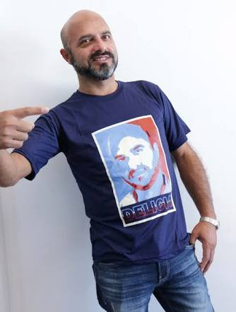
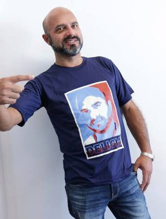

PAI DE FAMILIA
 

JAJA
Jainson largou sua vida ativa para trabalhar na RBS porque não aguentava mais tomar suco de laranja, e também por que ele queria virar Tecnico em redes.
local: Alcides Maya
suco: Laranja <3
segurança: pantera negra
suco: Laranja <3
segurança: pantera negra